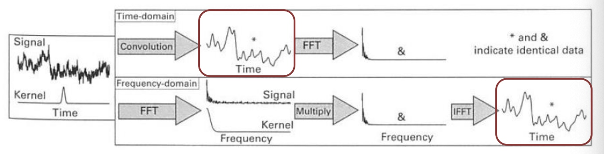

生物医学工程 | EEG分析 - 卷积和点成
点乘｜Dot Product
数学定义
假设输入为两个vector，$x = [x_1, x_2, …, x_n]$，$y = [y_1, y_2, …, y_n]$，则点乘结果为
$$
x \cdot y = \sum_{i=1}^n x_i y_i = x_1y_1+x_2y_2+…+x_ny_n
$$
代码
MATLAB代码
1 | z = dot(x,y) |
Python代码
1 | z = np.dot(x, y) |
卷积｜Convolution
数学定义
离散卷积定义
假设输入为两个vector，$x = [x_1, x_2, …, x_n]$，$h = [h_1, h_2, …, h_n]$，则点乘结果为
$$
(x * h)[n] =x[n]*h[n]= \sum_{i=-\infty}^{+\infty} x(i) h(n-i) = \sum_{i=-\infty}^{+\infty} x(n-i) h(i)
$$
连续卷积定义
假设输入为两个连续函数$x(t)$和$h(t)$，则点乘结果为
$$
(x * h)(t) = x(t)*h(t)=\int_{-\infty}^{+\infty} x(\tau) h(t-\tau)d\tau = \int_{-\infty}^{+\infty} x(t-\tau) h(\tau)d\tau
$$
解释和理解
通常我们将x称为信号，h称为卷积核kernel，通常卷积核的长度比信号短一些。
离散卷积：如果信号x和卷积核h都是离散的，则卷积可以理解为卷积核h从信号的一侧取长度和卷积核h一样的一组数据点，然后一一对应的进行点乘，并将结果求和作为第一个卷积的结果。然后卷积核h在信号上向右滑动一格，重复上面的步骤得到第二个卷积结果，以此类推直到卷积核遍历了信号x的所有点。
连续卷积：如果信号x和卷积核h都是连续的，则卷积可以理解为卷积核h和信号x重合的面积，并将面积的大小作为第一个卷积的结果。然后卷积核h在信号上向右滑动，重复上面的步骤得到第二个卷积结果，以此类推直到卷积核遍历了信号x的所有点。
从理论上来讲，卷积核是从负无穷滑动到正无穷。但通常我们只取信号x不为零的部分。需要注意的是，卷积之后可能需要人工选择长度，不论是matlab还是python都给出了卷积结果长度选项，但我们也可以手动截取某一个部分
 |
 |
 |
 |
为了保证信号两端的点都能够被卷积核完整的覆盖到，我们通常会给信号两端加一些为零的点（见图C）。补零之后卷积结果的长度为**信号长度+卷积核长度-1**。卷积之后的幅度会改变，如果想要和原始信号的幅值进行比较的话，则只需要将卷积结果除以卷积核的长度即可。此外，一般推荐卷积核选择奇数作为长度。
点积和卷积的区别
-
点积（dot product）在数学上与相关系数（correlation coefficient）相关联，它用于衡量两个信号之间的相似性，而不考虑时间偏移。
傅里叶变换（Fourier Transform）可以提供信号的频谱信息，并在频域中比较信号的相似性。
-
卷积（convolution）在数学上与交叉相关（cross-correlation）相关联，用于衡量信号在时间上的相似性随时间偏移的变化。
小波变换（Wavelet Transform）可以提供不同尺度和时间分辨率下信号的特征信息，并比较信号在不同时间上的相似性。
时域的卷积等价于频域的点积。换句话说，以下两种方法得出的结果相同

代码
MATLAB代码
1 | y = conv(u,h) % 等价于conv(h,u) |
Python代码
1 | y = np.convolve(u, h) # 等价于conv(h,u) |
！练习
题目：使用一个长度为11的卷积核对信号求移动平均（类似移动平均滤波器）
1 | x = cumsum(randn(1,1000)) |
1 | import numpy as np |
声明：此blog内容为上课笔记，仅为分享使用。部分图片和内容取材于课本、老师课件、网络。如果有侵权，请联系aursus.blog@gmail.com删除。